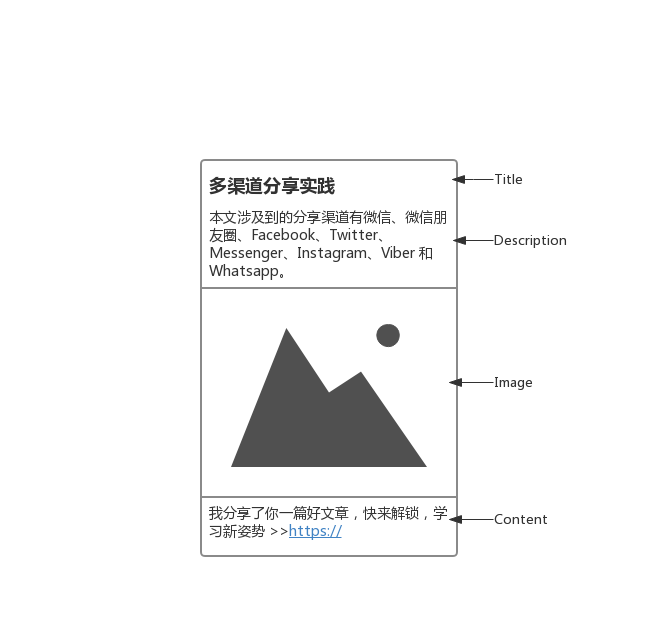

<!DOCTYPE HTML>

<html lang="en">
  
<head><meta name="generator" content="Hexo 3.8.0">
  <meta charset="utf-8">
  
  <title>多渠道分享实践 | Kathy&#39;s Tech Blog</title>
  <meta name="author" content="Kathy Miao">
  
  <meta name="description" content="Kathy Miao的技术博客">
  
  
  <meta name="viewport" content="width=device-width, initial-scale=1, maximum-scale=1">

  <meta property="og:title" content="多渠道分享实践">
  <meta property="og:site_name" content="Kathy&#39;s Tech Blog">

  
    <meta property="og:image" content="undefined">
  

  
    <meta http-equiv="Content-Language" content="en">
  

  <link href="/img/favicon.png" rel="icon">
  
    <link rel="apple-touch-icon" href="/img/apple-icon.png">
    <link rel="apple-touch-icon-precomposed" href="/img/apple-icon.png">
    

  <link rel="alternate" href="/atom.xml" title="Kathy&#39;s Tech Blog" type="application/atom+xml">
  <link rel="stylesheet" href="/css/style.css" media="screen" type="text/css">
  
  <style type="text/css">
  /* Tim Pietrusky advanced checkbox hack (Android <= 4.1.2) */
body{ -webkit-animation: bugfix infinite 1s; }
@-webkit-keyframes bugfix { from {padding:0;} to {padding:0;} }

  

  
    article .post-content-index .entry{max-height: 620px; overflow:hidden;}
  
</style>

  <!--[if lt IE 9]><script src="//html5shiv.googlecode.com/svn/trunk/html5.js"></script><![endif]-->

  <script>
  (function(i,s,o,g,r,a,m){i['GoogleAnalyticsObject']=r;i[r]=i[r]||function(){
  (i[r].q=i[r].q||[]).push(arguments)},i[r].l=1*new Date();a=s.createElement(o),
  m=s.getElementsByTagName(o)[0];a.async=1;a.src=g;m.parentNode.insertBefore(a,m)
  })(window,document,'script','//www.google-analytics.com/analytics.js','ga');

  ga('create', 'null', 'auto');
  ga('send', 'pageview');
 
</script>


  
    
      <link href="http://fonts.googleapis.com/css?family=Open+Sans:300,400|Playball" rel="stylesheet" type="text/css">
    
  <link href="//maxcdn.bootstrapcdn.com/font-awesome/4.1.0/css/font-awesome.min.css" rel="stylesheet">
  <script src="http://ajax.aspnetcdn.com/ajax/jQuery/jquery-1.11.1.min.js"></script>

  


</head>
</html>

<body>
  <header id="header"><div class="padding inner">
	<div class="alignleft logo">
	  <h1><a href="/">Kathy&#39;s Tech Blog</a></h1>
	</div>
	<nav id="main-nav" class="alignright">
		<input type="checkbox" id="toggle">
		<label for="toggle" class="toggle" data-open="Main Menu" data-close="Close Menu" onclick><i class="fa fa-bars"></i></label>
	  <ul class="menu">
	    
	      <li><a href="/">Home</a></li>
	    
	      <li><a href="/archives">Archives</a></li>
	    
	    
	  </ul>
	</nav>
	<div class="clearfix"></div>
</div>
</header>
  <div id="page-heading-wrap">
  	<div class="inner">
      <div class="padding">
    		
          <h1>多渠道分享实践</h1>
          <ul>
            <li>
              <span class="heading-span">Posted on: </span>
              <time datetime="2019-11-25T02:50:17.000Z">2019-11-25</time>
            </li>
            
              <li>
                <span class="heading-span">By: </span>

                
                  <a href="/">Kathy Miao</a>
                

              </li>
            
            <li>
              <span class="heading-span">With: </span>
              
            </li>
          </ul>
        
      </div>
  	</div>
  </div>
  <div id="content" class="inner">
    <div id="main-col" class="alignleft"><div id="wrapper" class="padding"><article class="post">
  
  
    <div class="post-content">
  
      
      <div class="entry">
        
          <h1 id="多渠道分享实践"><a href="#多渠道分享实践" class="headerlink" title="多渠道分享实践"></a>多渠道分享实践</h1><p>财富云平台的业务场景有包括海外渠道等多渠道的分享需求，结合了国内微信的分享，设计了一套多渠道分享方案。</p>
<blockquote>
<p>本文涉及到的分享渠道有微信、微信朋友圈、Facebook、Twitter、Messenger、Instagram、Viber 和 Whatsapp。主要介绍了以上渠道的分享方式，以及根据业务场景设计的分享方案。</p>
</blockquote>
<p>以上渠道分享出来的卡片样式大同小异，主要包括：<strong>title</strong>、<strong>description</strong>、<strong>image</strong>，以及分享文案，我们可以命名为 <strong>content</strong>。</p>
<a id="more"></a>
<p></p>
<h2 id="分享方式"><a href="#分享方式" class="headerlink" title="分享方式"></a>分享方式</h2><h3 id="一次分享"><a href="#一次分享" class="headerlink" title="一次分享"></a>一次分享</h3><p>一次分享即为从 APP 内直接分享到对应渠道。</p>
<p>目前分享主要涉及两种方式：<strong>SDK卡片式</strong>、<strong>开放图谱读取</strong>。</p>
<h4 id="SDK卡片式"><a href="#SDK卡片式" class="headerlink" title="SDK卡片式"></a>SDK卡片式</h4><p>国内的分享，比方说微信分享、也包括 Messenger，主要从 APP 分享的方式是主要为 Native 调用 SDK 的方式进行分享。根据对应平台提供的 SDK 及其分享字段规则，就可以唤醒 APP 并触发分享。</p>
<p>微信：<a href="https://developers.weixin.qq.com/doc/oplatform/Mobile_App/Resource_Center_Homepage.html" target="_blank" rel="noopener">https://developers.weixin.qq.com/doc/oplatform/Mobile_App/Resource_Center_Homepage.html</a></p>
<p>Messenger：<a href="https://developers.facebook.com/docs/sharing/messenger?locale=zh_CN" target="_blank" rel="noopener">https://developers.facebook.com/docs/sharing/messenger?locale=zh_CN</a></p>
<p>分享的效果是直接拼好一个卡片，即为分享的全部内容。</p>
<h4 id="开放图谱读取"><a href="#开放图谱读取" class="headerlink" title="开放图谱读取"></a>开放图谱读取</h4><p>而国际渠道的分享，包括 Facebook、Twitter 等，分享卡片的生成是靠开放图谱。</p>
<p>分享的效果是先通过 SDK 分享出一段代链接的文案，对应 APP 去读页面里埋的分享内容而生成分享卡片样式。</p>
<p>本文涉及的这些渠道所读取的主要有以下两种：</p>
<p>以 Facebook 为代表的: <a href="https://developers.facebook.com/docs/sharing/webmasters#markup" target="_blank" rel="noopener">https://developers.facebook.com/docs/sharing/webmasters#markup</a><br> <figure class="highlight html"><table><tr><td class="gutter"><pre><span class="line">1</span><br><span class="line">2</span><br><span class="line">3</span><br><span class="line">4</span><br></pre></td><td class="code"><pre><span class="line"><span class="tag">&lt;<span class="name">meta</span> <span class="attr">property</span>=<span class="string">"og:url"</span> <span class="attr">content</span>=<span class="string">"http://www.myj.name/"</span> /&gt;</span></span><br><span class="line"><span class="tag">&lt;<span class="name">meta</span> <span class="attr">property</span>=<span class="string">"og:title"</span> <span class="attr">content</span>=<span class="string">"多渠道分享实践"</span> /&gt;</span></span><br><span class="line"><span class="tag">&lt;<span class="name">meta</span> <span class="attr">property</span>=<span class="string">"og:description"</span> <span class="attr">content</span>=<span class="string">"本文涉及到的分享渠道有微信、微信朋友圈、Facebook、Twitter、Messenger、Instagram、Viber 和 Whatsapp。"</span> /&gt;</span></span><br><span class="line"><span class="tag">&lt;<span class="name">meta</span> <span class="attr">property</span>=<span class="string">"og:image"</span> <span class="attr">content</span>=<span class="string">"shareCard.png"</span> /&gt;</span></span><br></pre></td></tr></table></figure></p>
<p> 以 Twitter 为代表的：<a href="https://developer.twitter.com/en/docs/tweets/optimize-with-cards/overview/summary-card-with-large-image" target="_blank" rel="noopener">https://developer.twitter.com/en/docs/tweets/optimize-with-cards/overview/summary-card-with-large-image</a><br> <figure class="highlight html"><table><tr><td class="gutter"><pre><span class="line">1</span><br><span class="line">2</span><br><span class="line">3</span><br><span class="line">4</span><br><span class="line">5</span><br></pre></td><td class="code"><pre><span class="line"><span class="tag">&lt;<span class="name">meta</span> <span class="attr">name</span>=<span class="string">"twitter:card"</span> <span class="attr">content</span>=<span class="string">"summary_large_image"</span> /&gt;</span></span><br><span class="line"><span class="tag">&lt;<span class="name">meta</span> <span class="attr">name</span>=<span class="string">"twitter:url"</span> <span class="attr">content</span>=<span class="string">"http://www.myj.name/"</span> /&gt;</span></span><br><span class="line"><span class="tag">&lt;<span class="name">meta</span> <span class="attr">name</span>=<span class="string">"twitter:title"</span> <span class="attr">content</span>=<span class="string">"多渠道分享实践"</span> /&gt;</span></span><br><span class="line"><span class="tag">&lt;<span class="name">meta</span> <span class="attr">name</span>=<span class="string">"twitter:description"</span> <span class="attr">content</span>=<span class="string">"本文涉及到的分享渠道有微信、微信朋友圈、Facebook、Twitter、Messenger、Instagram、Viber 和 Whatsapp。"</span> /&gt;</span></span><br><span class="line"><span class="tag">&lt;<span class="name">meta</span> <span class="attr">name</span>=<span class="string">"twitter:image"</span> <span class="attr">content</span>=<span class="string">"shareCard.png"</span> /&gt;</span></span><br></pre></td></tr></table></figure></p>
<p> 开篇所说的几个通过开放图谱获取分享内容的渠道整理如下：</p>
<table>
<thead>
<tr>
<th style="text-align:left">渠道</th>
<th style="text-align:center">Android</th>
<th style="text-align:center">IOS</th>
</tr>
</thead>
<tbody>
<tr>
<td style="text-align:left">Facebook</td>
<td style="text-align:center">og:</td>
<td style="text-align:center">og:</td>
</tr>
<tr>
<td style="text-align:left">Instagram</td>
<td style="text-align:center">og:</td>
<td style="text-align:center">og:</td>
</tr>
<tr>
<td style="text-align:left">Twitter</td>
<td style="text-align:center">twitter:</td>
<td style="text-align:center">twitter:</td>
</tr>
<tr>
<td style="text-align:left">Viber</td>
<td style="text-align:center">twitter:</td>
<td style="text-align:center">twitter:</td>
</tr>
<tr>
<td style="text-align:left">Whatsapp</td>
<td style="text-align:center">og:</td>
<td style="text-align:center">twitter: &amp; og:</td>
</tr>
</tbody>
</table>
<p>如果你仔细看了上面提供的文档，你会发现 Twitter 也会读取 <code>og:</code>的标签。而更加神奇的是，Whatsapp 会在不同的平台上读取不同的标签！</p>
<p>在我们调研过的很多页面中，页面标准的元数据标签<code>&lt;meta&gt;</code>、<code>og:</code>标签和<code>twitter:</code>标签，都会埋入同样的描述内容，这就使得这些链接无论分享到哪个渠道，读取到的内容都是相同。</p>
<p>但如果需求要求针对不同的分享渠道进行区分，那就需要在分享出来的页面上面做一些手脚。</p>
<h3 id="技术方案"><a href="#技术方案" class="headerlink" title="技术方案"></a>技术方案</h3><h4 id="APP-内"><a href="#APP-内" class="headerlink" title="APP 内"></a>APP 内</h4><p>第一步，即使在 APP 内调用 SDK 分享到对应渠道。</p>
<p>回看一下分享卡片的几个元素，有一部分与链接拼在一起分享的文案，即为 <strong>content</strong> 部分。目前，微信、Facebook、Messenger 不支持拼接这个文案，需要在分享的时候用户自己输入。其余的渠道：Viber、Whatsapp、Instagram 和 Twitter 是可以在 SDK 分享中拼接 content。</p>
<p>有关于分享图片的大小和比例每个渠道不同，例如 Whatsapp 取 1:1，Messenger 取 1.9:1, Twitter 大卡片取 2:1。大多数的渠道都支持 <code>1024*768</code>，如果大小不符合则会截取。如果介意可以配置多个图片到<code>:image</code>标签下。</p>
<h4 id="分享落地页"><a href="#分享落地页" class="headerlink" title="分享落地页"></a>分享落地页</h4><p>由于现在大部分的页面都是前端框架渲染，为了方便分享内容的抓取，我们需要预先渲染一部分内容。<br>我们目前并没有使用同构的条件，所以我们在实际分享的内容前面加了一个页面，专门用作分享。</p>
<p>这一个页面承接了不同业务场景，支持分渠道、多语言。为了区分不同分享渠道的内容，也为了兼容像是 Whatsapp 这种迷惑的读取行为，我们采取了相对简单粗暴的方式:</p>
<p><strong><em>当我们获取到当前分享的渠道，我们把这个渠道配置的分享内容全部饱和的塞到图谱标签内。例如，当我们获取到当前分享的链接是 Facebook 的，我们会把为 Facebook 配置的内容给<code>og:</code>标签和<code>twitter:</code>标签都赋值。</em></strong></p>
<figure class="highlight html"><table><tr><td class="gutter"><pre><span class="line">1</span><br><span class="line">2</span><br><span class="line">3</span><br><span class="line">4</span><br><span class="line">5</span><br><span class="line">6</span><br><span class="line">7</span><br><span class="line">8</span><br><span class="line">9</span><br><span class="line">10</span><br><span class="line">11</span><br></pre></td><td class="code"><pre><span class="line"><span class="tag">&lt;<span class="name">title</span>&gt;</span>多渠道分享实践<span class="tag">&lt;/<span class="name">title</span>&gt;</span></span><br><span class="line"><span class="tag">&lt;<span class="name">meta</span> <span class="attr">name</span>=<span class="string">"description"</span> <span class="attr">content</span>=<span class="string">""</span> /&gt;</span></span><br><span class="line"><span class="tag">&lt;<span class="name">meta</span> <span class="attr">property</span>=<span class="string">"og:url"</span> <span class="attr">content</span>=<span class="string">"http://www.myj.name/"</span> /&gt;</span></span><br><span class="line"><span class="tag">&lt;<span class="name">meta</span> <span class="attr">property</span>=<span class="string">"og:title"</span> <span class="attr">content</span>=<span class="string">"多渠道分享实践"</span> /&gt;</span></span><br><span class="line"><span class="tag">&lt;<span class="name">meta</span> <span class="attr">property</span>=<span class="string">"og:description"</span> <span class="attr">content</span>=<span class="string">"本文涉及到的分享渠道有微信、微信朋友圈、Facebook、Twitter、Messenger、Instagram、Viber 和 Whatsapp。"</span> /&gt;</span></span><br><span class="line"><span class="tag">&lt;<span class="name">meta</span> <span class="attr">property</span>=<span class="string">"og:image"</span> <span class="attr">content</span>=<span class="string">"shareCard.png"</span> /&gt;</span></span><br><span class="line"><span class="tag">&lt;<span class="name">meta</span> <span class="attr">name</span>=<span class="string">"twitter:card"</span> <span class="attr">content</span>=<span class="string">"summary_large_image"</span> /&gt;</span></span><br><span class="line"><span class="tag">&lt;<span class="name">meta</span> <span class="attr">name</span>=<span class="string">"twitter:url"</span> <span class="attr">content</span>=<span class="string">"http://www.myj.name/"</span> /&gt;</span></span><br><span class="line"><span class="tag">&lt;<span class="name">meta</span> <span class="attr">name</span>=<span class="string">"twitter:title"</span> <span class="attr">content</span>=<span class="string">"多渠道分享实践"</span> /&gt;</span></span><br><span class="line"><span class="tag">&lt;<span class="name">meta</span> <span class="attr">name</span>=<span class="string">"twitter:description"</span> <span class="attr">content</span>=<span class="string">"本文涉及到的分享渠道有微信、微信朋友圈、Facebook、Twitter、Messenger、Instagram、Viber 和 Whatsapp。"</span> /&gt;</span></span><br><span class="line"><span class="tag">&lt;<span class="name">meta</span> <span class="attr">name</span>=<span class="string">"twitter:image"</span> <span class="attr">content</span>=<span class="string">"shareCard.png"</span> /&gt;</span></span><br></pre></td></tr></table></figure>
<p>之后这个页面会根据业务场景进行跳转，并对链接里面的参数进行透传。在暴露链接的分享渠道中使用短链重定向，可以使用户无感知。<br>这样做一是保证了分享出去的链接一定可以读取到内容并且 Android 和 IOS分享内容一致，二是读取同样标签的渠道（twitter、viber）也可以区分分享内容。</p>
<p>唯一需要考虑的是，在二次分享的时候如果改变了渠道，也不会读取为该渠道所配置的内容。例如从 Facebook 分享到了 Twitter，所展示的内容依然是为 Facebook 所配置的那套，而不会是 Twitter 的。</p>
<h3 id="二次分享"><a href="#二次分享" class="headerlink" title="二次分享"></a>二次分享</h3><p>二次分享即为从分享出来的页面转发分享。</p>
<p>转发分为两种：1、用户<strong>手动粘贴分享</strong>的链接到分享的渠道 app 上面；2、页面里调用<strong>转发</strong>功能</p>
<p>二次分享需要和一次分享的开放图谱图谱结合，因为本质上，这些渠道就是对分享出去的内容进行一个抓取。所以需要补充一下开放图谱的读取：</p>
<table>
<thead>
<tr>
<th style="text-align:left">渠道</th>
<th style="text-align:center">Android</th>
<th style="text-align:center">IOS</th>
</tr>
</thead>
<tbody>
<tr>
<td style="text-align:left">Messenger</td>
<td style="text-align:center">og:</td>
<td style="text-align:center">og:</td>
</tr>
</tbody>
</table>
<p>作为 Facebook 的亲儿子，Messenger 一脉相承了开放图谱的读取。</p>
<p>在微信里打开的页面做微信转发是需要调用微信SDK，引入之后在页面中进行配置，并在分享的时候配置对应的title、description、image。</p>
<p>微信 SDK：<a href="https://developers.weixin.qq.com/doc/offiaccount/OA_Web_Apps/JS-SDK.html" target="_blank" rel="noopener">https://developers.weixin.qq.com/doc/offiaccount/OA_Web_Apps/JS-SDK.html</a></p>
<p>从浏览器进行Facebook 以及 Twitter 分享并不在此次需求中，不过分享的方式很类似：</p>
<figure class="highlight html"><table><tr><td class="gutter"><pre><span class="line">1</span><br><span class="line">2</span><br><span class="line">3</span><br><span class="line">4</span><br><span class="line">5</span><br></pre></td><td class="code"><pre><span class="line"><span class="comment">&lt;!--安装过的时候唤起--&gt;</span></span><br><span class="line"><span class="tag">&lt;<span class="name">a</span> <span class="attr">href</span>=<span class="string">"fb-messenger://share/?link=https%3A%2F%2Fh5.lui.com&amp;app_id=123456789"</span>&gt;</span>Messenger<span class="tag">&lt;/<span class="name">a</span>&gt;</span></span><br><span class="line"><span class="comment">&lt;!--分享到页面--&gt;</span></span><br><span class="line"><span class="tag">&lt;<span class="name">a</span> <span class="attr">href</span>=<span class="string">"https://www.facebook.com/sharer.php?title=facebookShare&amp;u=https%3A%2F%2Fh5.lui.com"</span> <span class="attr">target</span>=<span class="string">"_blank"</span>&gt;</span>Facebook<span class="tag">&lt;/<span class="name">a</span>&gt;</span></span><br><span class="line"><span class="tag">&lt;<span class="name">a</span> <span class="attr">href</span>=<span class="string">"https://twitter.com/share?text=twitterShare&amp;url=https%3A%2F%2Fh5.lui.com"</span> <span class="attr">target</span>=<span class="string">"_blank"</span>&gt;</span>Twitter<span class="tag">&lt;/<span class="name">a</span>&gt;</span></span><br></pre></td></tr></table></figure>

        
      </div>
      <footer>
        
          
          
  
  <div class="tags">
    <a href="/tags/share/">share</a>, <a href="/tags/multi-channel/">multi-channel</a>, <a href="/tags/open-graph/">open graph</a>
  </div>

          <div class="share">
  

    

    
      <div class="g-plusone"></div>

      <script type="text/javascript">
        window.___gcfg = {lang: 'en-GB'};

        (function() {
          var po = document.createElement('script'); po.type = 'text/javascript'; po.async = true;
          po.src = 'https://apis.google.com/js/platform.js';
          var s = document.getElementsByTagName('script')[0]; s.parentNode.insertBefore(po, s);
        })();
      </script>
    

    
      <a href="https://twitter.com/share" class="twitter-share-button" data-via="halfer53">Tweet</a>
        <script>!function(d,s,id){var js,fjs=d.getElementsByTagName(s)[0],p=/^http:/.test(d.location)?'http':'https';if(!d.getElementById(id)){js=d.createElement(s);js.id=id;js.src=p+'://platform.twitter.com/widgets.js';fjs.parentNode.insertBefore(js,fjs);}}(document, 'script', 'twitter-wjs');</script>
    
  
</div>
          
<nav class="article-nav clearfix">
 

<div class="article-next">
<a href="/2017/09/05/commonjsEsm/" title="Node.js, TC-39, and Modules">
 <span>Node.js, TC-39, and Modules
</span>
<i class="fa fa-long-arrow-right"></i>
</a>
</div>

</nav>

        
        <div class="clearfix"></div>
      </footer>
    </div>
</article>


<section id="comment">
  <h2 class="title">Comments</h2>

  
</section>

</div></div>
    <aside id="sidebar" class="alignright"><div class="padding">
	
	  <div class="search">
  <form action="//google.com/search" method="get" accept-charset="utf-8">
    <input type="search" name="q" results="0" placeholder="Search">
    <input type="hidden" name="q" value="site:www.myj.name">
  </form>
</div>
	
	  
<div class="widget recent-post">
  <h3 class="title">Recent Posts</h3>
  <ul class="entry">
    
      <li>
        <a href="/2019/11/25/multiChannel-share/">多渠道分享实践</a>
      </li>
    
      <li>
        <a href="/2017/09/05/commonjsEsm/">Node.js, TC-39, and Modules</a>
      </li>
    
      <li>
        <a href="/2016/05/12/todolist-react/">【练手】Webpack+React开发Todolist项目</a>
      </li>
    
      <li>
        <a href="/2015/12/06/pushState/">【经验总结】pushState＋ajax应用</a>
      </li>
    
      <li>
        <a href="/2015/09/05/second-interview/">【面试次体验】堆糖前端面试</a>
      </li>
    
  </ul>
</div>

	
	  
	
	  
<div class="widget tag">
  <h3 class="title">Tags</h3>
  
    <a href="/tags/React/">React<small>1</small></a>
  
    <a href="/tags/Webpack/">Webpack<small>1</small></a>
  
    <a href="/tags/commonjs/">commonjs<small>1</small></a>
  
    <a href="/tags/html5/">html5<small>1</small></a>
  
    <a href="/tags/javascript/">javascript<small>1</small></a>
  
    <a href="/tags/modules/">modules<small>1</small></a>
  
    <a href="/tags/multi-channel/">multi-channel<small>1</small></a>
  
    <a href="/tags/nodejs/">nodejs<small>1</small></a>
  
    <a href="/tags/open-graph/">open graph<small>1</small></a>
  
    <a href="/tags/pjax/">pjax<small>1</small></a>
  
    <a href="/tags/share/">share<small>1</small></a>
  
    <a href="/tags/前端面试/">前端面试<small>2</small></a>
  
</div>

	
</div></aside>
    <div class="clearfix"></div>
  </div>
  <footer id="footer" class="inner"><div class="padding">
	<div class="alignleft">
	  
	  &copy; 2019 Kathy Miao
	  
	  Powerd by <a href="http://hexo.io/" target="_blank">hexo</a>
	  and Theme by <a href="https://github.com/halfer53/metro-light" target="_blank">metro-light</a>
	</div>

	<div class="alignright">
		
		
		
		
		
		
		
	</div>

	<div class="clearfix"></div>
</div>

<div class="scroll-top"><i class="fa fa-arrow-circle-up"></i></div></footer>
  


<script src="//cdnjs.cloudflare.com/ajax/libs/jquery.imagesloaded/3.0.4/jquery.imagesloaded.js"></script>
<script src="/js/gallery.js"></script>


<script type="text/javascript">
$(window).scroll(function() {

    if($(this).scrollTop() > 400) {
        $('.scroll-top').fadeIn(200);
    } else {
        $('.scroll-top').fadeOut(200);
    }
});

$('.scroll-top').bind('click', function(e) {
    e.preventDefault();
    $('body,html').animate({scrollTop:0},200);
});
</script>


</body>
</html>
